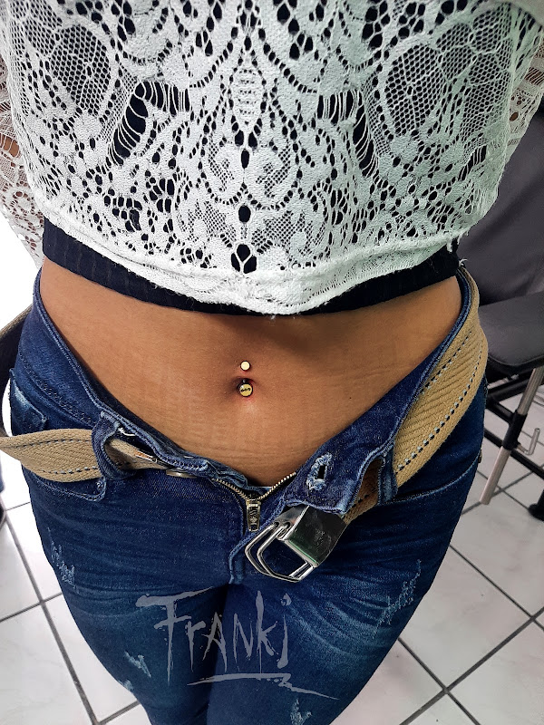
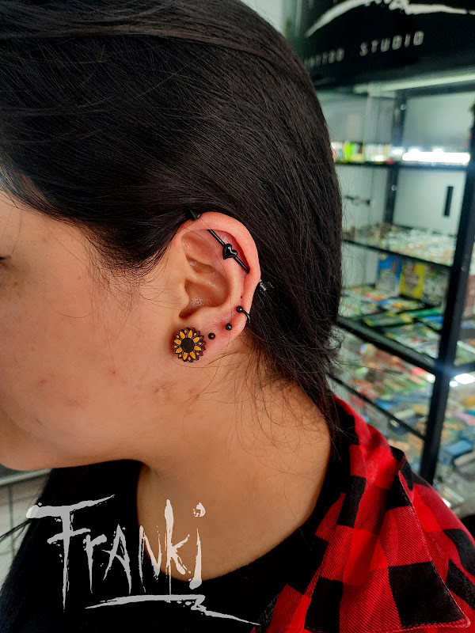
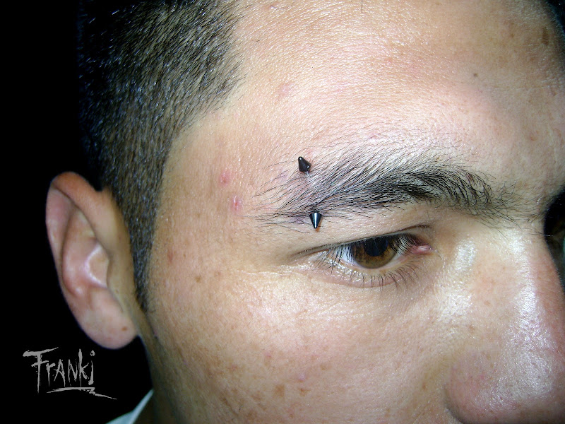
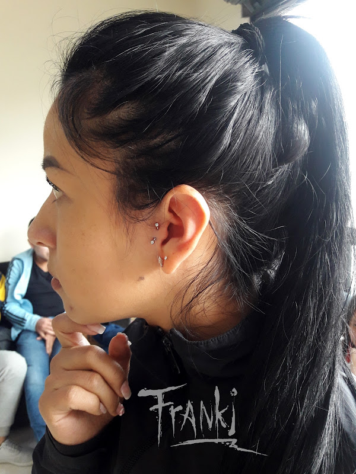

Perforaciones seguras, técnica limpia y joyería en acero quirúrgico hipoalergénico grado médico.
Una perforación saludable y sin complicaciones depende de una higiene rigurosa. Sigue las recomendaciones de bioseguridad de Franki Tattoo para que tu piercing cicatrice de forma impecable.

Colocación precisa con catéter estéril y banana en acero quirúrgico hipoalergénico 316L.
Perforación nasal rápida y sin dolor. Pieza inicial básica de acero quirúrgico incluida.

Alineación anatómica perfecta en barra recta de acero quirúrgico. Máxima bioseguridad.

Curvatura exacta para evitar rechazo o tensión en la piel. Técnica rápida.

Labret con base plana para mayor comodidad al dormir y usar audífonos.
Clientes reales perforados en Franki Tattoo Ibarra con piezas en acero quirúrgico hipoalergénico.